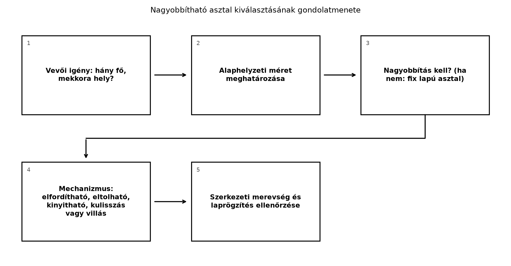
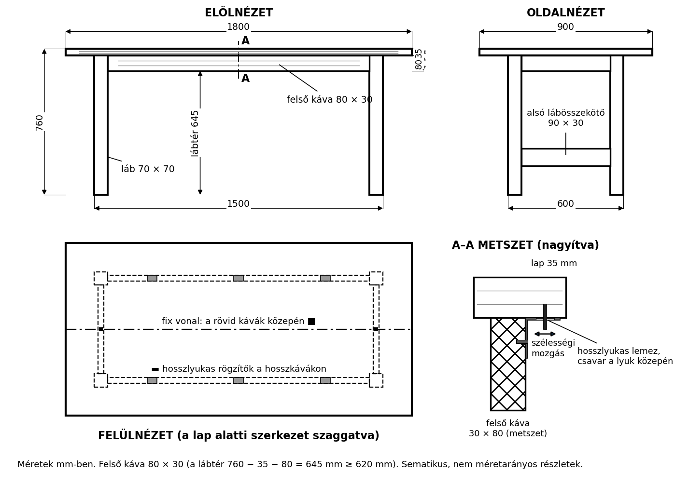

Egy vevő kis lakásba kér tömörfa étkezőasztalt. Azt mondja: „Hétköznap ketten használjuk, de vasárnap hatan ebédelünk.” Az asztalosnak ebből a két mondatból kell kiválasztania a megfelelő asztaltípust, szerkezetet és nagyobbító mechanizmust. Ha rosszul választ, az asztal lehet túl nagy, túl kicsi, lötyögő, nyikorgó, vagy épp a tömörfa lap megreped a rossz laprögzítés miatt. Ebben az alfejezetben megismerjük az asztalok jellemző típusait, szerkezeti részeit, a nagyobbítható mechanizmusokat és az asztallap mozgásbiztos rögzítését.
Képzelj el egy hagyományos, négy lábú fából készült étkezőasztalt. Alulról fölfelé haladva a következő fő részeket látod: a lábak viselik a terhelést, a kávák vízszintesen összekötik a lábakat, és ezekre támaszkodik a nagy, sík asztallap. A lábak és a kávák csapozott keretszerkezetet alkotnak. A lap nincs mereven a kerethez ragasztva, mert a fa nedvességváltozáskor dolgozik. A lapot ezért oldható vagy mozgást engedő kötéssel rögzítjük. Ez a kép lesz az asztalok szerkezeti alapja.
Definíció. Az asztal olyan bútor, amely egy vízszintes vagy közel vízszintes munkafelületből, az asztallapból, valamint az azt alátámasztó állványszerkezetből áll. Rendeltetése étkezés, munkavégzés, tárgyalás, tárolás vagy kiállítás.
Az asztalokat többféleképpen csoportosíthatjuk.
Rendeltetés szerint: étkezőasztal, konyhaasztal, íróasztal, tárgyalóasztal, dohányzóasztal, kávézó- és kerti asztal, munkaasztal.
Szerkezet szerint: láb–káva szerkezetű asztal, állványos asztal, tálcás asztal, konzolos asztal, korpuszos asztal.
A lap alakja szerint: négyszögletes, kerek, ovális, sokszögű, lekerekített sarkú, nagyobbítható vagy fix lapú.
A nagyobbíthatóság szerint: fix lapú asztal, elfordítható lapú, eltolható lapú, kinyitható lapú, kulisszás nagyobbítható, villás kihúzós asztal.
Az asztal kiválasztásánál mindig a rendeltetésből, a rendelkezésre álló helyből és a felhasználók számából indulunk ki.

A diagram a tervezés döntési lépéseit mutatja. A következő szakaszokban az egyes szerkezettípusokat részletezzük.
Láb–káva szerkezet. A legelterjedtebb asztalszerkezet. Négy láb alkotja a álló elemeket, a lábakat felül kávák kötik össze. A káva lehet felső káva, amelyre a lap közvetlenül támaszkodik, és lehet alsó lábösszekötő is, amely a lábak alsó harmadát merevíti. A lábak a kávákkal jellemzően vésett csapozással kapcsolódnak, amit a Vésett csapozás: szakállas, átmenő, T-kötés; hevederek alfejezetben tanultunk. A csap és a heveder méretezése adja a keret merevségét.
Állványos asztal. A lapot nem négy láb, hanem egy központi oszlop vagy két oldalt elhelyezett állvány tartja. Gyakori a kerek és ovális asztaloknál. Előnye, hogy a lap alatt nincs zavaró láb a sarkokban, így kényelmesebb a székek elhelyezése. Hátránya, hogy az állvány nagyobb csavaró- és billenő terhelést kap, ezért az oszlop és a talp merevítése fontos.
Tálcás asztal. A lapot egy keretszerű tálca veszi körbe, és a tálcakerethez csatlakoznak alul a lábak vagy az állvány. A tálca lehet a lap alatti díszes, keskenyebb keret, amely megfogja a lapot. Tálcás asztalnál a lap gyakran betétként ül a keretben, és a széle nem terhelhető túlzottan. A tálca merevíti a szerkezetet, de a lap mozgását itt is biztosítani kell.
Definíció. A felső káva az a vízszintes keretelem, amely a lábak felső részét egymással összeköti, és a lap alátámasztására szolgál. Az alsó lábösszekötő a lábak alsó részét merevíti. A tálca a lap alatt futó, keretszerű díszelem vagy szerkezeti elem.
Mindhárom szerkezetnél a káva és a láb derékszögben áll, a kötések résektől mentesek, a keret átlói egyenlők. A kész keretet utána illesztjük az asztallaphoz.
A nagyobbítható asztalok akkor hasznosak, ha a napi használat kisebb, de alkalmanként nagyobb lapfelületre van szükség. A mechanizmus mindig a lap elmozdításával és/vagy betétlapok behelyezésével dolgozik.
Elfordítható lapú asztal. A két fél lapot középen csuklósan, elfordíthatóan rögzítik. Alaphelyzetben a lapok egymásra hajtva fekszenek, a látható lap fél méretű. Nagyobbításkor az egymásra hajtott lapok elfordulnak, és a két fél lap egymás mellé kerül. A megoldás gyors, de a hajtogatott lap vastagabb lehet, és a csuklószerkezetnek nagy terhelést kell kibírnia.
Eltolható lapú asztal. A két fő lapot oldalirányban el lehet tolni. A két lap közé a megnyitott hézagba betétlap kerül. A betét lehet az asztal alatt tárolt, azonos anyagú lap. A mechanizmus egyszerű, de a betét illesztésének pontosnak kell lennie.
Kinyitható lapú asztal. A kisebb alapasztal két oldalán csuklósan felfelé hajtható szárnylapok vannak. Amikor felhajtjuk a szárnyakat, a szárnyak alá mozgatható kitámasztó léc vagy konzol kerül. A kinyitott szárny megnöveli a hasznos felületet. A szárnyak alátámasztását a kihúzott léc, a kihúzható fiókbetét vagy a kiforduló támasz adhatja.
Kulisszás nagyobbítható asztal. A legelterjedtebb nagyobbítható mechanizmus. A két fél lapot alul kulisszák, azaz párhuzamos vezetősínek tartják. A kulisszák a kávakeretben futó hornyokon csúsznak. Nagyobbításkor a két fél lapot széthúzzuk, a középső nyílásba betétlapot vagy betétlapokat helyezünk, majd a lapokat visszacsúsztatjuk, és a betétek a helyükre zárnak. A kulisszás asztal a legelterjedtebb megoldás nagy, 6–10 személyes étkezőasztaloknál.
Villás kihúzós asztal. A lap alatt villaszerű kihúzószerkezet van, amely a lapok alatti párhuzamos csúszólécekből áll. A kihúzás során a két lap szétnyílik, középre egy vagy több betét kerül, majd a villa visszatolódik és megfeszül. A villás szerkezet előnye, hogy több betét behelyezésével jelentős hossznövekedést érhetünk el.
Minden nagyobbítható asztalnál a mozgó részeket viasszal, száraz szappannal vagy műanyag csúszóbetéttel kell könnyű járásúvá tenni, és a fém vezetősíneket a gyártó előírása szerint kell felszerelni (ellenőrizendő: szerelvénygyártói adatlap).
Az interaktív változatban a mechanizmus kiválasztható, és a nyit/zár csúszkával lépésenként követhető a lapok mozgása.
Az íróasztaloknál a lap alatt tárolóelemek is vannak, ezért a szerkezet eltér az étkezőasztalétól.
Fiókos íróasztal. A lap alatt egy vagy több fiókos oldal helyezkedik el. A fiókok a homlokfelületre merőlegesen futnak ki, és a fiókos oldalakat kávák vagy válaszfalak kötik össze. A fiókos oldalak merevítik a szerkezetet.
Konténeres íróasztal. Az íróasztal alá különálló, görgős vagy lábakon álló konténer kerül. A konténer lehet fiókos, ajtós vagy vegyes tároló. Előnye, hogy a konténer szabadon mozgatható, a munkafelület alatt nagyobb lábtér marad.
Korpuszos íróasztal. A lap alatt oldalsó korpuszok (szekrénytestek) állnak, amelyek fiókokat, ajtókat vagy polcokat tartalmaznak. A korpuszos változat nagyon stabil, de a lábtér korlátozott. Irodai használatra gyakori.
Az íróasztalnál a munkalap lehet tömörfa, bútorlap, MDF vagy laminált forgácslap. A tömörfa lap mozgását itt is figyelembe kell venni.
A tömörfa asztallap a nedvességváltozás hatására szélességében jelentősen mozog. Ezt a Zsugorodás, dagadás és vetemedés: a fa „mozgása” alfejezetben tanultuk. Ha a lapot mereven ragasztjuk vagy csavarozzuk a kávakerethez, a zsugorodáskor a lap megrepedhet. Ezért a laprögzítés mindig mozgásbiztos legyen.
Fémkapocs. A káva belső oldalára csavarozott fém laprögzítő kapocs a lapba mart horonyba nyúlik. A kapocs nem ragasztott, és a horonyban kis játékot enged. A csavarok a káván rögzítenek, a lap csak felfekszik. A horony mélységét a kapocs méretéhez igazítjuk.
Hosszlyukas csavarozás. A kávafuratok helyett a lap aljára hosszlyukas fémlemez kerül. A lemez a laphoz csavarozva, a kávához oldhatóan csavarozva. A hosszlyuk hosszirányban megengedi a lap szélességi mozgását, de a lapot lefelé szorítja. A hosszlyuk hossza legalább akkora legyen, mint a lap várható maximális méretváltozása.
Fecskefarkú heveder. A lap aljára mart, fecskefark alakú hornyok befogadják a kávára szerelt, ferde élű hevedereket. A heveder a horonyban elcsúszhat, így a lap szabadon mozog, de nem emelkedik fel. Ezt a hagyományos megoldást nagyobb tömörfa lapoknál alkalmazzák.
Szabály. A tömörfa asztallapot a szélesség közepén (a rövid kávák közepénél) rögzítjük fixen, a többi rögzítőpont mozgást enged; így a lap a középvonaltól kétfelé dolgozik. A hosszlyuk hossza a rögzítési vonaltól mért távolsággal arányos, a csavart a hosszlyuk közepébe tesszük, mert a lap dagadhat és zsugorodhat is (tájékoztató: 900 mm-es lap szélén kb. ±6 mm). A rögzítőelemek száma és kiosztása a lap méretétől és a fa mozgásától függ.
Az ábrán a fix rögzítés a lap szélességének közepén, a rövid kávák közepénél van, így a lap a középvonaltól kétfelé dolgozik, és a széleken a legnagyobb a mozgás. Az interaktív változatban a fanedvesség csúszkával változtatható; a merev csavarozást bekapcsolva látszik, hogyan reped meg vagy domborodik ki a lap.

Az ábra az étkezőasztal szerkezetét mutatja: a felső káva 80 mm magas, így a lábtér 760 − 35 − 80 = 645 mm. A felülnézeten a fix rögzítés a rövid kávák közepén van, a hosszkávákon hosszlyukas rögzítők engedik a lap szélességi mozgását; az A–A metszet a hosszlyukas lemezt nagyítva mutatja.
Az asztal méreteit az emberi testméretekből és a használat módjából vezetjük le. A következő értékek tájékoztatók, és a bútortervezési gyakorlatban, szabványokban, katalógusokban pontosítják őket (ellenőrizendő: aktuális szabvány, ergonómiai táblázat).
| Asztaltípus | Jellemző magasság (mm) | Jellemző lábtér vagy szabad nyílás (mm) | Megjegyzés |
|---|---|---|---|
| Étkezőasztal | 740–760 | térdtér alatt legalább 620–650 magasság | lap vastagsága 25–40 mm |
| Konyhaasztal / munkapult asztal | 850–900 | lábtér a használattól függ | álló munkánál magasabb |
| Íróasztal | 720–750 | térdnyílás szélesség 500–600, mélység 500–600 | tájékoztató érték |
| Dohányzó / dohányzó- és kávézóasztal | 400–550 | – | ülő vagy alacsony használat |
A négyszögletes étkezőasztaloknál egy főre körülbelül 550–650 mm hossz és 320–380 mm szélesség jut, a támlás szék kényelmes használatához a lap széle és a fal vagy más bútor között legalább 700–800 mm szabad tér kell (tájékoztató, ellenőrizendő). A nagyobbítható asztalnál a nagyobbított állapotban is biztosítani kell a közlekedést.
Figyelem. A fa mozgását az asztallapnál nem lehet elhagyni. A túl merev csavarozás a nedvesebb nyári időszakban a lap kidomborodását vagy szétrepedését okozhatja.
Példa. A vevő 6 főre szeretne nagyobbítható étkezőasztalt tömör tölgyből. Alaphelyzetben 4 fő használja, nagyobbítva 6–8 fő. A szoba hossza 4,2 m, a szélessége 3,5 m. Válasszunk kulisszás nagyobbítható szerkezetet.
Megoldás.
Méretek. Alaphelyzetben a lap legyen 1400 × 900 mm, ez 4 személyre kényelmes. Nagyobbításhoz a két fél lap széthúzásával 600 mm-es bővítést adunk, így a nagyobbított hossz 2000 mm. A szélesség marad 900 mm. A lap vastagsága 35 mm.
Ergonómiai ellenőrzés. A 900 mm szélesség mellett két szemben ülő személynek fejenként 450 mm mélység jut. Ez elegendő. A magasság 760 mm. A káva alsó éle a padlótól 760 − 35 − 80 = 645 mm-re van, így a térdtér szabad (legalább 620–650 mm). A székekkel a 4,2 m hosszú szobában a 2,0 m hosszú asztal mellett is marad két oldalt kb. 1,1 m kijárat, ami elegendő.
Zsugorodás számítása. A tölgy lap húrirányú differenciális zsugorodása (tájékoztató, ellenőrizendő). Tegyük fel, hogy a lap nedvességtartalma 8 %-ról 12 %-ra nő, tehát .
A lap szélességi mozgása tehát körülbelül 11 mm. A hosszlyukas rögzítők hosszlyukját legalább 12–15 mm mozgási tartalékkal készítjük, a lapot pedig a szélesség közepén, a rövid kávák közepénél rögzítjük fixen, a hosszkávákon hosszlyukas rögzítők engedik a mozgást (a lap közepétől kétfelé kb. ±5–6 mm). A hosszirányú mozgás elhanyagolhatóan kicsi.
Ellenőrzés. A nagyobbított hossz 2000 mm, a szoba hossza 4200 mm, tehát marad 2200 mm, oldalanként 1100 mm. A lap magassága 760 mm, a lábtér 645 mm. A zsugorodási mozgás 11 mm, a hosszlyuk 15 mm-rel biztonságot ad. ∎
Az asztal készítésekor az alábbiakat ellenőrizzük:
Ha eltérést tapasztalunk, a hibás kötést csapozással, utánállítással vagy újraillesztéssel javítjuk. A mechanizmusnál a szerelvénygyártó beállítási adatait kell követni (ellenőrizendő).
Az asztal billeg, a lábak nem egysíkúak. Az ok általában pontatlan csapozás vagy rossz ragasztási nyomás. A helyes gyakorlat: a keretet ragasztáskor sík asztalon, derékszögellenőrzéssel készítjük, a lábvégeket utána együtt gyaluljuk.
A tömörfa lap szétreped a csavaroknál. Az ok a merev rögzítés. A lapot hosszlyukas vagy fecskefarkú mozgó kötéssel kell rögzíteni, ahogyan fent leírtuk.
A nagyobbítható asztal nehezen nyílik vagy lötyög. A kulisszák és vezetősínek nincsenek párhuzamosan beállítva, vagy a futófelület nem megfelelő. A vezetősíneket párhuzamosra kell állítani, a csúszófelületeket tisztán és könnyen járóvá kell tenni.
A betétlap színe vagy rajzolata elüt a fő lappal. Ha nem azonos anyagból, nedvességből és évgyűrűállásból készül, a betét feltűnő lesz. A betétet a fő lappal azonos fafajból, lehetőleg azonos deszkából, azonos nedvességre szárítva kell elkészíteni.
Egy asztalos műhelybe reklamáció érkezett: a vevő új, tömör bükk étkezőasztalának lapján a káva felett hosszanti repedés jelent meg az első téli fűtési szezonban. A vizsgálatkor kiderült, hogy a lapot a kávákhoz minden oldalon merev, fém csavarral rögzítették, hosszlyuk nélkül. A fűtési szezonban a lakás relatív páratartalma lecsökkent, a fanedvesség kb. 3–4 %-kal csökkent, a 900 mm széles lap húrirányban kb. 8–10 mm-t zsugorodott. A merev csavarok nem engedték a mozgást, ezért a lap a leggyengébb ponton elrepedt. A javítás során a repedést megragasztották, a csavarokat hosszlyukas laprögzítőkre cserélték, és a lapot a káva hosszoldalához rögzítették. A tanulság: a fa mozgását mindig be kell építeni a szerkezetbe.
1. feladat (A) Sorold fel a nagyobbítható asztalok öt jellemző mechanizmusát, és egy-egy mondattal jellemezd őket!
2. feladat (A) Egy tömör tölgy asztallap szélessége 850 mm. Húrirányú differenciális zsugorodása 0,30 %/%. A fanedvesség 7 %-ról 11 %-ra nő. Számítsd ki a lap szélességváltozását mm-ben!
3. feladat (B) Rajzolj le szövegesen egy eltolható lapú étkezőasztalt alaphelyzetben és nagyobbított állapotban! Milyen alkatrészekből áll, és hogyan működik a mechanizmus?
4. feladat (B) Egy vevő 4 fős alaphelyzetű, de 8 főre nagyobbítható étkezőasztalt kér tömör bükkből. Alaphelyzetben 1400 × 900 mm a lap. Válassz nagyobbítható mechanizmust, és határozd meg a nagyobbított hosszt úgy, hogy 8 fő kényelmesen elférjen! Ellenőrizd a mozgást is, ha a szélesség 900 mm, β_húr = 0,28 %/%, Δu = 5 %.
5. feladat (C) Hasonlítsd össze a fémkapocs, a hosszlyukas csavarozás és a fecskefarkú heveder laprögzítést! Melyiket mikor választanád? Indokold!
6. feladat (D) Készíts egy láb–káva szerkezetű, kisméretű dohányzóasztal rajzleírását és műveleti sorrendjét! A lap 500 × 500 mm, vastagság 25 mm, a lábak 50 × 50 mm, a felső káva 80 × 25 mm. Az 1. lépéstől a laprögzítésig írd le a műveleteket, és jelöld az ellenőrzési pontokat!
A öt nagyobbítható mechanizmus: elfordítható lapú – a fél lapok egymásra hajtva, elfordítva nyílnak ki; eltolható lapú – a két főlap szétnyílik, középre betétlap kerül; kinyitható lapú – az oldalsó szárnyak felhajthatók, kitámasztólécekkel; kulisszás – a lapok alatt kulisszák csúsznak, középre betétlap zár; villás kihúzós – a villa szerkezet húzódik ki, egy vagy több betétet befogadva.
Adott: , , .
Keresett: .
Ellenőrzés: 4 % nedvességváltozás, 850 mm széles lapnál nagyjából 10 mm; nagyságrend helyes.
Az eltolható lapú asztal két főlapból, egy vagy több betétlapból, valamint a főlapokat vezető, kihúzható sínből áll. Alaphelyzetben a két főlap egymás mellett van, a betét az asztal alatt tárolt. Nagyobbításkor a két főlapot oldalra húzzuk, a betétet a középső nyílásba helyezzük, majd a főlapokat visszaengedjük. A betét a főlapok közé zár, ezért a betét élét és a főlap élét pontosan kell illeszteni. A rajzon elölnézetben látható a zárt asztal, oldalnézetben a széthúzott lapok és a közéjük helyezett betét, felülnézetben a lapok szétnyitott helyzete. Jelölni kell a vezetősínt, a betétet, a főlapokat és a rögzítő reteszt.
Válasszunk kulisszás nagyobbítható mechanizmust. Alaphelyzet 1400 mm hossz. A 8 fő a két hosszoldalon ül, oldalanként 4: (fejenként 600 mm, tájékoztató), ha a szélesség 900 mm. A nagyobbított hossz 2400 mm, a bővítés 2400 − 1400 = 1000 mm. A bővítést két 500 mm-es betétlappal oldjuk meg.
Zsugorodási ellenőrzés a 900 mm szélességre: , ,
A hosszlyukaknak legalább 14–15 mm mozgási tartalék kell. A lapot a szélesség közepén (a rövid kávák közepénél) rögzítjük fixen; a hosszkávákon hosszlyukas rögzítők engedik a mozgást, a csavart a hosszlyuk közepébe szereljük (±6,3 mm a lap közepétől).
A választás a lap nagyságától, vastagságától, a káva anyagától és a műhely felszereltségétől függ. Mindháromnál el kell kerülni a merev, minden oldali rögzítést.
Rajzleírás: egy 500 × 500 mm-es, 25 mm vastag bükk lap; négy láb 50 × 50 mm, magasság 480 mm; felső káva 80 × 25 mm. A kávák végén csap van, a lábakban fészek. Felülnézet: a négy láb a sarkoknál, a láb külső síkja 30 mm-rel a lap széle mögött; a káva vállmérete 500 − 2 · 30 − 2 · 50 = 340 mm, a csapokkal (2 × 25 mm) együtt 390 mm. Elölnézet: a lap 25 mm vastagsága, a káva 25 mm magassága, a lábak 480 mm. Metszet a káván: a lábfészek, a káva és a laprögzítő hosszlyuk.
Műveleti sorrend: 1. Anyagkiosztás, szabás a lábakra, kávákra és lapra – ellenőrzés: méretek mm-ben. 2. Lábak méretre gyalulása 50 × 50 mm-re – ellenőrzés: derékszög, párhuzamosság. 3. Kávaelemek méretre gyalulása 25 × 80 mm – ellenőrzés: hosszméret és derékszög. 4. A lábakba fészket vésünk, a kávák végére csapot alakítunk – ellenőrzés: csap-fészek illesztés száraz próbával. 5. Keret száraz összeállítása, derékszög ellenőrzése – ellenőrzés: átlók egyenlősége, rések. 6. Ragasztás, összeszorítás – ellenőrzés: derékszög, sík fekvés. 7. Lap méretre szabása és gyalulása – ellenőrzés: 500 × 500 × 25 mm, lap síkja. 8. Lap hosszlyukas rögzítőkkel a kerethez – ellenőrzés: hosszlyuk mozgási tartalék, a lap nem feszül. 9. Felületcsiszolás, felületkezelés – ellenőrzés: a felület egyenletes, por- és szennyeződésmentes.
Gépbiztonság: a szabás, gyalulás, csapozás gépi műveleteit csak betanított, felügyelt tanuló végezheti, védőberendezésekkel, elszívással.
Az asztalok rendeltetés, szerkezet, lapforma és nagyobbíthatóság szerint csoportosíthatók. A leggyakoribb a láb–káva szerkezet, ahol négy láb és a kávakeret adja a merevséget, csapozással. Az állványos asztal központi oszlopot vagy oldalsó állványokat használ, a tálcás asztal a lap alatti tálcakerethez csatlakozik. A nagyobbítható asztalok közül ismerjük az elfordítható, eltolható, kinyitható, kulisszás és villás kihúzós megoldásokat. Az íróasztalok lehetnek fiókosak, konténeresek vagy korpuszosak. A tömörfa asztallapot mindig mozgásbiztosan kell rögzíteni: fémkapocs, hosszlyukas csavar vagy fecskefarkú heveder segítségével. A fa zsugorodását a Zsugorodás, dagadás és vetemedés: a fa „mozgása” képletével számítjuk; a hosszlyuk hosszát a várható méretváltozásnál nagyobbra kell venni. Az ergonómiai méretek tájékoztatók: étkezőasztal magassága 740–760 mm, íróasztal 720–750 mm. Továbbvitt eredmény. Az itt tanult asztalszerkezeteket, mechanizmusokat és laprögzítést használjuk a Egy- és kétfiókos asztal szerkezeti rajza és gyártástechnológiája alfejezetben, valamint a székek állványszerkezetének arányainál a Ülőbútorok: típusok, állványszerkezet, ergonómia; a támlás szék szerkezeti rajza témakörben.